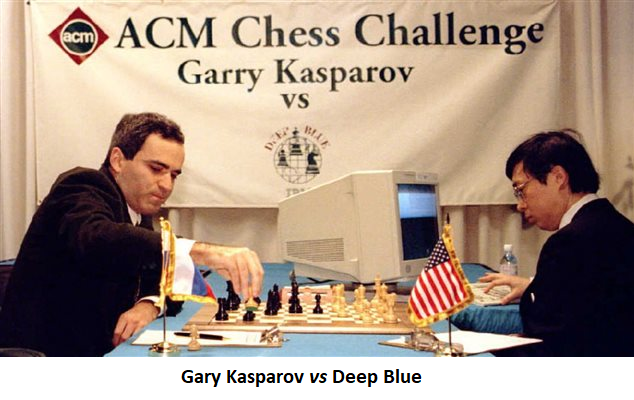

LES ORIGINES
L'histoire du jeu d'échecs est longue de plus de quinze siècles. L'origine du jeu fait l'objet de plusieurs hypothèses. Le jeu, dans sa forme primitive, est né en Asie entre le troisième et le sixième siècle de notre ère. Le lieu précis est toujours discuté : Inde, Chine, ou Asie centrale (entre la Perse et l'Ouzbékistan). Arrivé en Perse sous le nom de Chatrang au sixième siècle, il est adopté par le monde musulman au Moyen-Orient et y connaît un grand développement qui prépare sa forme moderne.
Au terme d'un processus de normalisation, le jeu d'échecs dans sa forme moderne est désormais répandu dans le monde entier, et il est pratiqué par de nombreux joueurs, librement ou affiliés à des clubs et des fédérations nationales. Des compétitions sont organisées à tous les niveaux, y compris les championnats du monde et les Olympiades sous l'égide de la Fédération internationale des échecs. Il existe un système de classement des joueurs en fonction de leur force, dominé par les maîtres et grands maîtres internationaux. Dans ce contexte, le jeu d'échecs joue un rôle sur la scène internationale et ses compétitions ont notamment été l'un des théâtres de la guerre froide.
Deep Blue
Deep Blue est un superordinateur spécialisé dans le jeu d'échecs par adjonction de circuits spécifiques, développé par IBM au début des années 1990. Perdant un match en 1996 (2-4) contre le champion du monde d'échecs de l'époque Garry Kasparov, Deep Blue (surnommé alors Deeper Blue) bat le champion du monde (3,5–2,5) lors du match revanche en 1997, mais hors des conditions exigées lors des championnats du monde.
